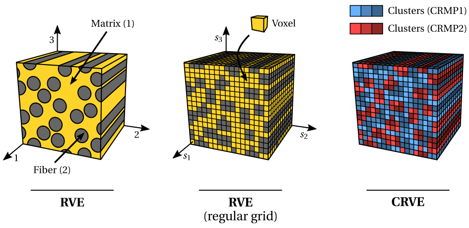
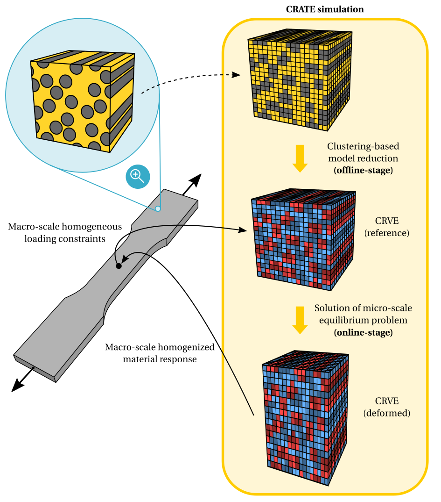

Overview¶
A quick overview over CRATE’s structure, both from a conceptual and computational point of view.
Conceptual framework¶
CRATE’s conceptual framework can be easily understood by getting familiar with some fundamental concepts and having a basic comprehension of a first-order multi-scale modeling scheme.
Note
For a complete treatment of these topics, the interested reader is referred to Ferreira (2022) and references therein. In particular, check:
Chapter 2: Continuum Mechanics and Multi-scale Modeling;
Chapter 4: Clustering-based Reduced-Order Modeling of Heterogeneous Materials.
Assume that we are interested in predicting the behavior of a fiber-reinforced composite (heterogeneous) material composed of two different material phases (matrix and fiber). At the micro-scale level, the composite material needs to be first characterized by a Representative Volume Element (RVE), i.e., a volume of material sufficiently large such that it contains enough morphological and topological information to be representative in an average sense. Given the enforcement of periodic boundary conditions in the material analysis, the RVE is assumed periodic. In the second place, the RVE needs to be spatially discretized in a regular grid of voxels, where each voxel is associated with a given material phase. Finally, the RVE model can be compressed by means of a clustering-based domain decomposition, i.e., a cluster analysis that decomposes the spatial domain into a given number of material clusters according to a given set of features. The compressed model is then called Cluster-reduced Representative Volume Element (CRVE), composed of cluster-reduced material phases (CRMPs), each composed of different material clusters. Each material cluster is, therefore, a group of voxels that exhibit some type of similarity and that are numerically handled in a unified way.
{kind=link}
The multi-scale analysis of a uniaxial tensile test of a dogbone specimen is schematically illustrated below. Besides the spatially discretized RVE of the fiber-reinforced composite, CRATE receives as input data a given macro-scale strain and/or stress loading path, i.e., a given set of macro-scale first-order homogeneous loading constraints. A two-stage clustering-based reduced-order method is then employed to solve the micro-scale equilibrium problem. In the so-called offline-stage, the RVE is compressed into the CRVE by means of a clustering-based domain decomposition. In the following online-stage, the CRVE is subject to the macro-scale loading path and the micro-scale equilibrium problem is solved under periodic boundary conditions. The macro-scale material response, namely the homogenized stress tensor and the effective material consistent tangent modulus, is then computed by means of computational homogenization, rendering the main output data of CRATE.
{kind=link}
Computational framework¶
CRATE is designed and implemented in Python, making it easily portable between all major computer platforms, easily integrated with other software implemented in different programming languages and benefiting from an extensive collection of prebuilt (standard library) and third-party libraries. Given the extensive numerical nature of the program, its implementation relies heavily on the well-known NumPy and SciPy scientific computing packages, being most numerical tasks dispatched to compiled C code inside the Python interpreter.
Moreover, it is worth remarking that CRATE is implemented in a high-modular architecture and following an object-oriented programming (OOP) paradigm. Besides improving the overall readability and comprehension of the code, this means that CRATE can be easily extended by means of suitable interfaces to account for new features and developments, as well as being efficiently coupled with other software.
Note
The customization of CRATE to incorporate new features and developments, as well as the coupling of CRATE with other software, is thoroughly described in Advanced Usage.